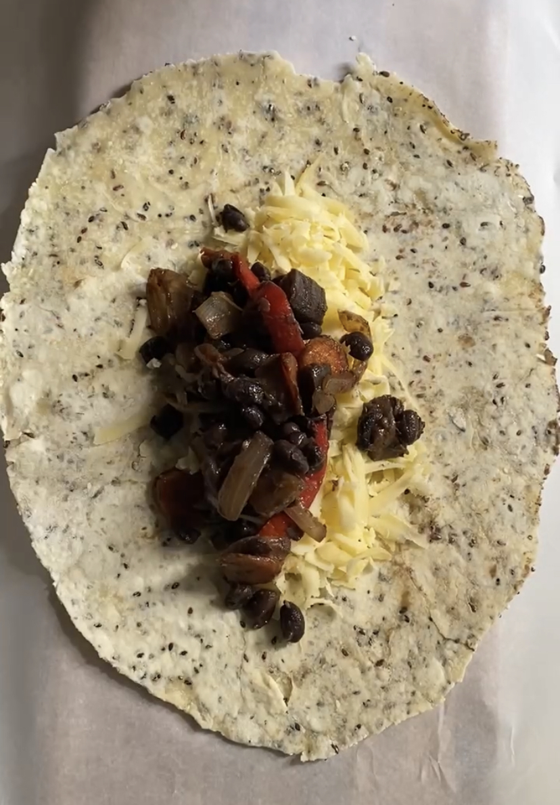

Burrito de Vegetales Salteados, Porotos Negros y Queso - para freezar!
GF
DF
NS

¿Cómo no conocí esto antes?
Eso es lo que no paré de preguntarme en todo el día. Esta manera de tener siempre viandas o cenas resueltas ES UNA GENIALIDAD. Siempre listos para bajar del freezer, meter en un tupper y llevar al laburo.
Burrito de Vegetales Salteados, Porotos Negros y Queso
Amo tanto los wraps/burritos, podría comerlos todos los días y no cansarme. Creeme que esto es un re mil camino de ida
TIEMPO PREPARACIÓN
10 minutos
TIEMPO COCCIÓN
15 minutos
TIEMPO TOTAL
35 minutos
Porciones: 1
Platos: Almuerzo, Vianda
Tags: Vegano, Gluten-Free (opcional)
Ingredientes
- 1 masa de wrap/“tortilla” (puede ser sin gluten)
- los vegetales que tengas en la heladera, yo usé cebolla, morrón, berenjena y zanahoria
- condimentos: comino, ají molido, pimentón dulce y ahumado, sal, pimienta
- una legumbre: porotos, garbanzos, arvejas
- algún queso (vegano) que derrita, comprado o casero
Instrucciones
- Salteá los vegetales en un wok o sartén con un poco de aceite de oliva y condimentos. Cuando estén semi cocidos (unos 5 minutos), agregá la legumbre elegida y dejá que se siga cocinando. Como siempre, vas a probar y corroborar que es una locura lo bien que cocinás (y si no se sigue condimentando hasta que lo sientas). Una vez cocido, reservá.
- Armá el burrito poniendo el queso previamente rallado y los vegetales sobre la masa. Cerrá y envolvé en papel manteca. Así va directo al freezer.
- Cuando lo quieras comer, podés dejar que se descongele en la heladera o mandarlo directamente al microondas u horno. Si te gusta crocante, dorá vuelta y vuelta en sartén. A COMEEEER!
Tips
- Aprovechá y hacé en cantidad, podés con la misma base de vegetales variar la legumbre y es como tener comidas diferentes
- Te recomiendo además que te reserves un poco del relleno y mezclado con arroz o fideos tenés otra vianda súper completa
- El queso le da el toque pero es completamente omitible

Buenas, Soy Valen!
Soy vegetariana hace más de 4 años y en mi tiempo libre me divierto creando recetas basadas en plantas.
Más Sobre MíKEYS RECETAS
V
Vegano
VG
Vegetariano
GF
Gluten Free
AP
Alta en proteínas
BA
Baja en Azúcares